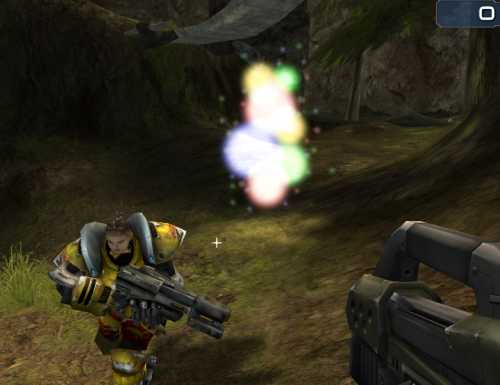

Mod Ideas/Yog-Sothoth
Description
Remember the original Alone in the Dark for the PC?
Remember the monster in the ballroom?
The big column of glowing spheres, that would hunt you down and kill you?
That was inspired by Yog-Sothoth, one of the creatures from the "Cthulhu Mythos" created by [H.P. Lovecraft]. This mod will insert the Great Old One into the map, where He will seek out and devour any players He encounters.
The mod itself is quite simple. An Actor is inserted into the map that determines the nearest Player, and moves directly toward him. It only moves at a relatively slow pace (say, walking speed), but it ignores all obstacles, including walls and terrains. If another Player moves closer, he becomes its new target. So you don't have to outrun Yog-Sothoth, you just have to outrun the guy next to you. 
When a Player is touched by Yog-Sothoth, he is instantly killed. (Maybe even turned into a skeleton, for effect.) Because it can move through walls, you may not be able to see it coming; but not to worry, as you'll know its presence by the mind-numbing roar it constantly emits. When it's really close, it is so overpowering that it causes your vision to shake as if caught in an earthquake. (if this can be done)
The monster is itself indestructible, and cannot be stopped in any way.
If you're really mean, you could use the Mod Ideas/Kinetic Rifle to shove opponents into Yog-Sothoth 
This mutator should be suitable for all game types (I think).

A mockup of Yog-Sothoth hunting down a player |
Comments
MythOpus: Myth Man Loves THis Idea I wanted something like this for my MOR| project (MythOpus/Developer Journal) but didn't know what in what way I was going to do this... 
Shuriken: Very interesting, and something I would love to play with. Hmm... should be fairly easy to outrun, but if you get close, your should get thrown around so it's impossible to escape then. Got any pictures of what sort of monster it is?
Kagato: I'm afraid not, but trust me, it's not from lack of trying. I couldn't find any screenshots at all of this monster. Perhaps its singularly horrific countenance was not meant to be witnessed by the likes of Man... ahem. Instead, I've added a mockup I threw together in GIMP. Admittedly, it looks a bit like a christmas tree here, but when it's spinning toward you, roaring OOOOUUUUOOOOUUUUOOOO it can get a bit tense